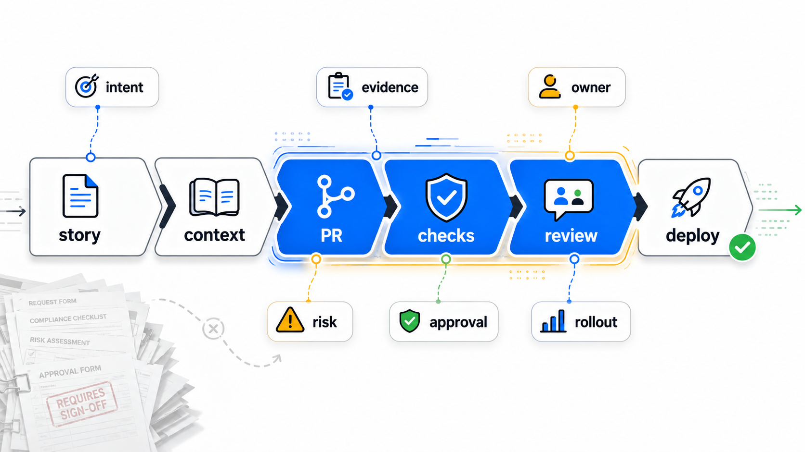
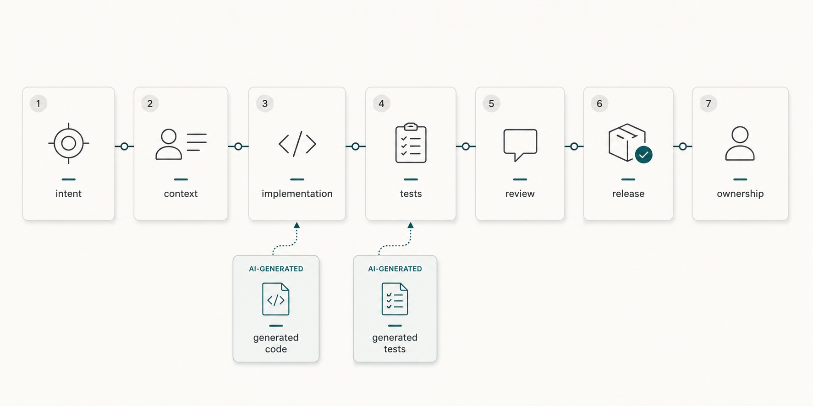
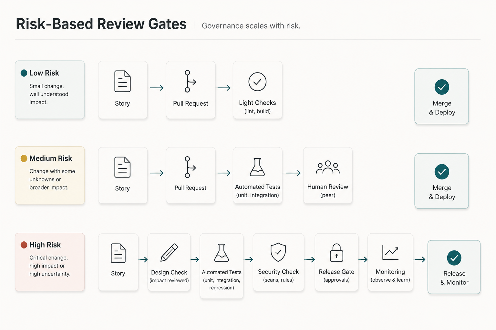

AI governance has a bad reputation with many engineers.
People hear the phrase and imagine forms, approval meetings, policy decks, and a committee that arrives near the end of delivery to ask questions that should have been answered much earlier.
That kind of governance does not help much.
It arrives too late. It creates paperwork around the work instead of improving the work itself. It trains teams to treat governance as something to get through rather than something that helps them ship safer software.
But AI-assisted delivery still needs governance.
When AI helps draft stories, generate code, write tests, summarize pull requests, update documentation, review changes, or prepare release notes, it starts influencing the delivery path. The question is no longer whether governance exists.
The question is where it lives.
Good AI governance should live inside normal engineering workflow.
It should show up in story quality, context discipline, pull request checks, review gates, traceability, test evidence, deployment controls, and ownership clarity.
In other words, good AI governance is not a separate committee.

It is disciplined engineering made visible.
Bureaucratic governance versus engineering governance
Bureaucratic governance usually asks for proof after the work is mostly done.
Who approved this? Was AI used? Were risks reviewed? Were tests run? Was security considered? Is there documentation? Who owns this in production?
Those are fair questions.
The problem is timing and placement.
If the first time a team thinks about these questions is at the end, governance becomes friction. People scramble to reconstruct intent, fill in missing context, and justify decisions that were never clearly captured.
Engineering governance asks the same kinds of questions earlier and closer to the work.
It asks for business intent in the story.
It asks for relevant context before AI generates code.
It asks for assumptions in the implementation plan.
It asks for test evidence in the pull request.
It asks for ownership through service ownership, CODEOWNERS, or review routing.
It asks for deployment safety through rollout plans, feature flags, monitoring, and rollback paths.
This is not governance as theater.
It is normal engineering discipline, made explicit enough that humans and AI tools can both work with it.
Why AI makes this more important
AI reduces the cost of producing software artifacts.
A team can generate a draft story faster. Produce an implementation faster. Create tests faster. Summarize a pull request faster. Draft documentation faster.
That speed is useful.
It also changes the failure mode.
When output becomes easier to produce, weak intent, missing context, shallow validation, and unclear ownership become more dangerous. AI can produce a plausible answer even when the story is unclear. It can generate tests that exercise the code without proving the business behavior. It can summarize a pull request without noticing that the wrong assumption shaped the change.
DORA's 2025 AI-assisted software development research makes a useful point here: AI adoption is a systems problem. AI can amplify the strengths or weaknesses of the software delivery system around it.
If a team has clear ownership, good internal knowledge, meaningful tests, and healthy review practices, AI has better structure to work within.
If a team has vague requirements, stale documentation, weak test evidence, and unclear approvals, AI can make the confusion move faster.
This is why governance should not be treated as a blocker to AI adoption.
It is part of making AI adoption useful.
Governance starts with story quality
AI-assisted work often starts badly when the story is weak.
The ticket says:
Add eligibility support for premium customers.
AI can generate code from that. It may even generate clean code.
But it may not know what "premium" means. It may not know which markets are excluded, which customers are grandfathered, which limits apply, which compliance rules matter, or which existing behavior must not change.
That is not a coding problem first.
It is a governance problem at the requirements boundary.
Lightweight governance at the story level might ask for:
- business intent
- acceptance criteria
- constraints
- out-of-scope items
- known edge cases
- affected systems
- data sensitivity
- required approvers
- links to relevant rules or decisions
This does not need to become a long template.
The goal is to make the minimum useful context visible before generation begins.
AI can help draft the story. But a human still owns whether the story contains the right intent and constraints.
Context discipline is governance
AI governance is often discussed as policy.
In software teams, it is also context discipline.
Which documents should an assistant use? Which examples are current? Which patterns are deprecated? Which services own which data? Which runbook is authoritative? Which ADR explains the design constraint?
If the context is scattered, stale, or misleading, AI-assisted work becomes fragile.
This is where governance overlaps with knowledge management.
Good governance makes the right context easier to find and the wrong context easier to avoid. It gives important documents owners. It keeps rules near the workflow. It marks old decisions as superseded. It connects business rules, architecture notes, tests, runbooks, and code.
DORA's guidance on AI-accessible internal data points in the same direction: AI tools are more useful when internal knowledge is accessible, reliable, and relevant.
For engineering teams, context discipline can be simple:
- keep current guidance near the code
- link stories to business rules and ADRs
- update runbooks after incidents
- retire stale diagrams
- make ownership visible
- encode repeated standards in tests or checks
That is governance.
Not because it creates a new approval body, but because it makes the delivery system more understandable and controllable.
Pull requests are a governance surface
The pull request is one of the most useful places to embed AI governance.
Not because every PR needs a long AI disclosure essay.
Because the PR is where intent, code, tests, review, and approval already meet.
A good PR template can ask simple questions:
- What changed?
- Why did it change?
- Was AI used to draft, edit, test, review, or summarize anything?
- What assumptions shaped the change?
- What tests were run?
- What risk remains?
- Who should review this?
- Is rollout or rollback needed?
For low-risk changes, the answers can be short.
For high-risk changes, the same questions create useful evidence.
GitHub's Copilot coding agent announcement is a good signal of where tooling is going. Agents can work through branches and pull requests, but human approval boundaries still matter. GitHub's responsible-use guidance for Copilot agents says AI code review should supplement human review, not replace it.
That is the right model.
AI can prepare work for review.
AI can review work.
AI can summarize work.
But humans still own acceptance.
Checks make governance repeatable
Some governance belongs in human review.
Some belongs in automation.
If a rule is repeatable, objective, and important, it should not depend only on memory.
Examples include:
- tests
- type checks
- linting
- dependency scanning
- secret scanning
- license checks
- security checks
- schema validation
- migration checks
- documentation build checks
These controls are not new. AI just makes them more important because generated changes can arrive faster and look more complete than they are.
Branch protection, required reviews, required status checks, and ownership routing are normal engineering tools. GitHub's branch protection documentation is a practical example of how teams already encode review and merge controls close to delivery.
This is also where NIST's AI Risk Management Framework is useful. It talks about governing, mapping, measuring, and managing AI risk. In delivery terms, that means teams should know where AI is used, understand what risk it introduces, measure evidence through tests and reviews, and manage release decisions through clear controls.
The practical version is not complicated:
Do not rely on AI confidence.
Rely on evidence.
Review gates should be decision points
A review gate is not just a person clicking approve.
It is a decision point.
For AI-assisted delivery, useful review gates may exist at:
- requirements
- design
- implementation
- testing
- security and compliance
- release
- operations
Not every change needs every gate.
Risk should decide the path.

A documentation typo does not need architecture review. A change to authentication should not move with the same lightweight path as a CSS adjustment. A data deletion workflow needs stronger evidence than an internal dashboard label.
This is where governance without bureaucracy depends on judgment.
The goal is not to slow every change.
The goal is to slow the right changes at the right points, with the right evidence and the right owner.
Google's public code review guidance is useful here because it treats review as more than style checking. Review includes design, functionality, complexity, tests, and maintainability. In AI-assisted work, that review lens becomes even more important because clean-looking generated code can still contain wrong assumptions.
Traceability is not surveillance
Some teams hear "AI governance" and assume prompt logging.
Prompt logs may be useful in some environments. But they are rarely the best primary record for engineering decisions.
What matters later is usually not every prompt the developer typed.
What matters is:
- what problem the team intended to solve
- what context shaped the solution
- what assumptions were accepted
- what alternatives were considered
- what tests were run
- what review happened
- what risk remained
- who approved the change
- how it was deployed
That is an evidence chain.
It helps during incidents. It helps future maintainers. It helps reviewers understand why a change exists. It helps teams improve their AI-assisted workflow without turning development into surveillance.
Good traceability reconstructs the accepted engineering decision.
It does not need to record every exploratory step.
Deployment controls are part of governance
AI governance does not stop at merge.
A generated change can pass review and still fail in production.
Deployment controls matter:
- feature flags
- staged rollout
- canary deployment
- monitoring
- alerting
- rollback plans
- incident ownership
- post-release validation
These controls are especially important when AI helped produce or reshape a change in a sensitive area.
The question is not only "did the code look right?"
The question is "can we detect and recover if this is wrong?"
That is governance too.
The NIST Secure Software Development Framework is a useful reminder that secure software delivery depends on practices such as review, testing, vulnerability management, and maintaining trustworthy development workflows. AI does not remove those practices. It raises the value of making them visible.
A lightweight governance checklist
For an AI-assisted change, teams can ask:
| Area | Question |
|---|---|
| Intent | Is the business goal clear? |
| Context | Did AI receive the right current context? |
| Assumptions | Are generated assumptions visible? |
| Evidence | What tests, checks, or reviews support the change? |
| Ownership | Who owns approval and production impact? |
| Risk | What happens if this is wrong? |
| Release | Is rollout, monitoring, or rollback needed? |
This checklist is not meant to be a new ceremony.
It can live in a story template, PR template, agent handoff, review checklist, or release checklist.
The best place is wherever the team already makes the decision.
The real test
The real test of AI governance is not whether a policy document exists.
It is whether the team can answer practical questions during real work:
Why are we making this change?
What context shaped it?
What did AI generate or influence?
What evidence says it is correct?
Who reviewed it?
Who owns the decision?
How will we know if it fails?
How will we recover?
If those answers are visible in the workflow, governance is working.
If those answers live in a separate document nobody reads, governance is mostly theater.
Three practical takeaways
First, put governance where engineering work already happens. Stories, pull requests, tests, reviews, deployments, runbooks, and ownership records are better places to start than a separate AI approval process.
Second, make evidence visible. AI-generated work should be connected to intent, context, validation, review, and ownership.
Third, scale governance with risk. Lightweight changes need lightweight controls. High-impact changes need stronger context, review, testing, deployment safety, and human approval.
AI governance does not have to become bureaucracy.
Done well, it looks like good engineering.
Clear intent.
Useful context.
Visible assumptions.
Meaningful tests.
Human review.
Traceable decisions.
Owned releases.
Good AI governance is disciplined engineering made visible.